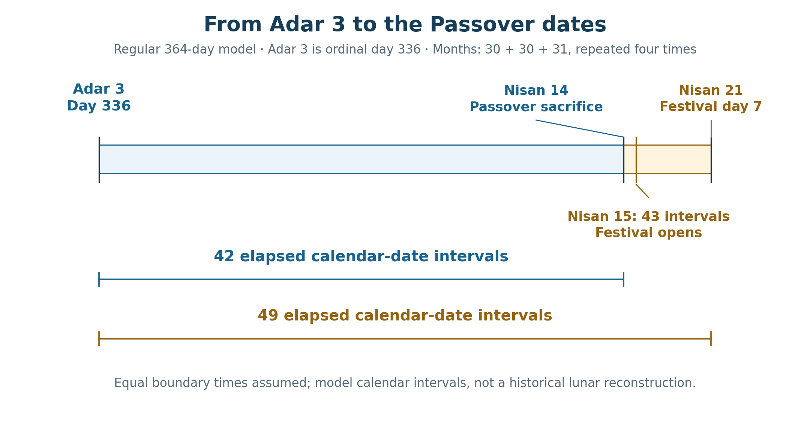
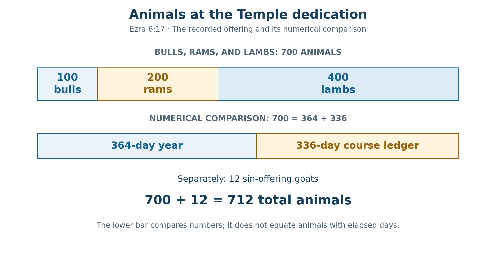
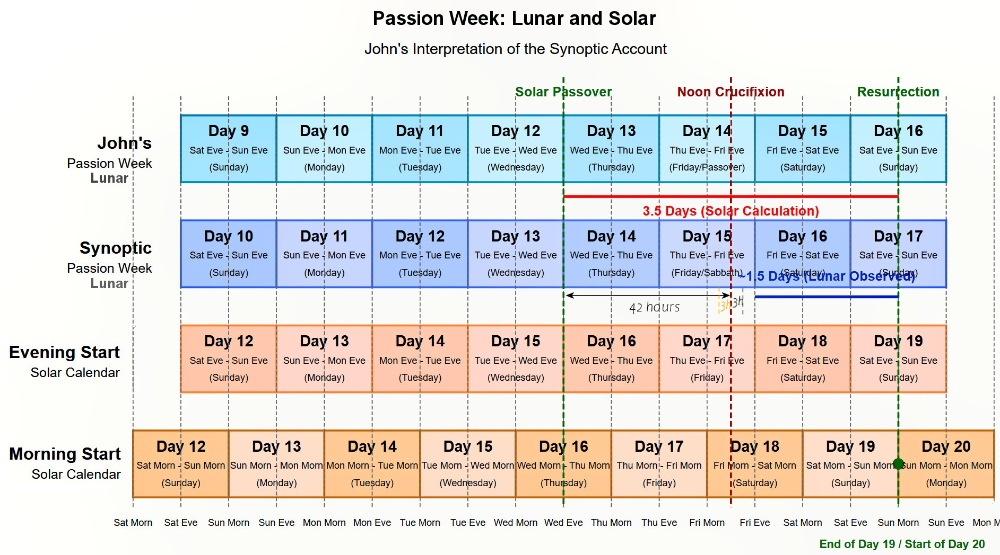

Book 1 · The Cross at the Center of Time · Chapter 11 of 18
The body of Christ and the dimensions of sacred time
“Go and measure the temple of God and the altar, and count the number of worshipers there.”
— Revelation 11:1
A measuring rod is placed in John's hand. Before he is shown the testimony of the two witnesses, he is told to measure the sanctuary, the altar, and the people who worship there. The command gathers a place of divine presence, a place of sacrifice, and a living company into a single act of measurement. Then the vision begins to number time.1
I return to that scene after the calendar comparisons of the previous chapter. We have drawn rows, marked boundaries, and counted hours around the Cross. Revelation invites me to consider what such measurements might serve. They may help us recognize the form of a dwelling: God with His people, the people gathered through the offering of His Son.
John's Gospel has already given this inquiry its center. Jesus speaks of a temple that will be raised in three days, and John identifies that temple as His body. I approach the dates and offerings of the earlier sanctuary from there. The building belongs to Israel's history. Its fulfillment opens into a Person, and through that Person into a people. The calendar's divisions become part of the testimony I am trying to follow.
The measurements must remain faithful to what they measure. A cubit describes length; an offering list counts animals; an interval counts the space between appointed dates. Their correspondences can be contemplated together while their identities remain clear. I believe that the Cross may actually give the earlier signs their order, reaching backward as well as forward through time. That possibility calls me to attend more closely to the particulars God has preserved.
In this chapter
- The temple that John names
- The vision begins to count time
- The house restored after exile
- Adar and the approach to Passover
- The offerings at the dedication
- The dimensions in the decree
- The Cross within the two measurements
- Forty-two across different measures
- The house filled with glory
- Sources and notes
The temple that John names
At the Passover in John 2, Jesus clears the Temple courts and is asked for a sign of His authority. His reply places destruction and restoration within a startlingly brief interval:
“Destroy this temple, and in three days I will raise it up again.”
— John 2:19
The hearers answer with the forty-six years associated with the Temple's building. John then supplies the interpretation: Jesus was speaking about His body. The disciples understand the saying after He has risen, and they believe the Scripture and His word.2
Here the movement from a building to a body is given by the Gospel itself. I do not have to infer it from a repeated number. The living Christ is the temple raised through death. Looking from that center, I see His offering at the Cross as the fulfillment toward which the altar's sacrifices have been moving.
Revelation's command to measure can therefore be read alongside the Gospel's temple saying without first settling the date of the Apocalypse or every interpretation of its sanctuary. The vision itself does not tell us that John turns toward a ruined earthly site and finds nothing there. It places a temple before him and gives him a task. The relationship I follow rests on that disclosed scene and on the Gospel's identification of Christ's body.3
The worshipers belong within the measurement. Peter describes believers as living stones being built into a spiritual house, a holy priesthood offering spiritual sacrifices through Jesus Christ. The image allows me to see the body-Temple extending into the life of the Church. Christ's sacrifice gathers people into the presence of God; their worship is part of the sanctuary's life.4
I hear the command personally as well. To measure the altar is to consider the offering laid upon it. To count the worshipers is to remember whom that offering receives. A calendar study that reaches Christ and then forgets the people He gathers has stopped before the vision's work is complete.
The vision begins to count time
Revelation 11 moves directly from the measured sanctuary to forty-two months during which the holy city is trampled. The two witnesses then prophesy for 1,260 days. When their testimony is complete, they are killed; after three and a half days, the breath of life from God enters them, they stand, and they are called upward.5
The chapter itself supplies a relationship between sanctuary, testimony, oppression, death, life, and ascent. Its numbers belong to those scenes. The forty-two months and 1,260 days stand within the familiar prophetic half-week:
42 × 30 = 1,260; 3½ × 360 = 1,260.
The three and a half days then give the shorter measure in the witnesses' death-and-life sequence. I recognize a likeness to their Lord in the shape of their testimony. Revelation even identifies the great city's location by the place where their Lord was crucified. The witnesses' story is read in the light of His story.
These are distinct measures within one vision. Three and a half days are not forty-two months of ordinary elapsed time. Nor does the witnesses' stated interval assign a new literal duration to Christ's burial. Their testimony participates in His pattern, carrying it into the life and suffering of those who belong to Him.
The calendar used to express a half-week matters. In the 360-day prophetic register, three and a half years give 1,260 days. In the regular 364-day calendar, the same fraction of its year gives 1,274 days:
3½ × 364 = 1,274.
The Repository preserves both registers. Four additional days in each full year produce fourteen additional days over three and a half years. I can compare their forms without turning the Enochian year into a thirty-day-month year or shortening its actual count.6
This gives me a firmer beginning for the Temple-time inquiry. Revelation itself places the measured sanctuary beside the half-week language. I can follow that relationship into earlier Scripture, asking which dates and quantities genuinely contribute to it.
The house restored after exile
Ezra describes a people returning to worship amid the damage left by exile. Before the new Temple is complete, the altar is established and the appointed offerings resume. Tabernacles is observed according to what is written. Sacrifice and festival give the returning community a rhythm while the house is still awaiting completion.7
The order matters. The people do not wait for a finished building before they turn toward God. Worship begins in the unfinished place. Haggai will call them to resume the work, and Zechariah will speak encouragement into that same work. Ezra names both prophets in his account of the rebuilding.
Their dated notices give us actual points to measure. Haggai's first word comes in Darius's second year, on the first day of the sixth month. Work resumes on the twenty-fourth day of that month. Ezra dates the Temple's completion to the third day of Adar, in Darius's sixth year.8
Table 1 — The recorded dates of the rebuilding
| Notice | Recorded date | Source |
|---|---|---|
| Haggai's first word | Darius year 2, month 6, day 1 | Haggai 1:1 |
| Work resumes | Darius year 2, month 6, day 24 | Haggai 1:14–15 |
| Temple completed | Darius year 6, month 12, day 3 | Ezra 6:15 |
| Passover observed afterward | First month, day 14 | Ezra 6:19 |
If Darius’s regnal years begin at Nisan throughout these notices, Haggai’s first oracle and the Temple’s completion are separated by fifty-four months and two days in the common thirty-day-month representation: 54 × 30 + 2 = 1,622 elapsed days, or 1,623 included dates. The first oracle also precedes the stated resumption of work by twenty-three days; it is not itself the beginning of an uninterrupted construction clock.9
There is another way to arrange the regnal labels. Suppose Haggai and Zechariah number Darius's years from Nisan, while Ezra's completion notice numbers them from Tishri. Under that source-specific proposal, Ezra's sixth Tishri year places the completion one year earlier than a sixth Nisan year would. The first oracle and completion then stand forty-two month positions apart. It is a proposed relationship between the sources' year conventions, rather than a replacement for their written dates.
The remaining comparisons use Haggai’s word on month 7, day 21, and Zechariah’s vision on month 11, day 24, both in Darius’s second year. The closing dates are the Temple’s completion and the Nisan 21 that follows it. On the regular 364-day calendar, assigning Ezra’s completion to the proposed Tishri year makes each interval exactly 364 days shorter than the reading that uses Nisan years throughout:
Table 2 — The longer intervals under two declared regnal arrangements
| Elapsed interval on the regular 364-day calendar | Nisan years throughout | Nisan prophetic years and Tishri completion year |
|---|---|---|
| Haggai 1:1 to completion | 1,640 | 1,276 |
| Haggai 2:1 to completion | 1,589 | 1,225 = 35 × 35 |
| Haggai 2:1 to the subsequent Nisan 21 | 1,638 | 1,274 = 3½ × 364 |
| Zechariah 1:7 to that Nisan 21 | 1,514 | 1,150 = 2,300 ÷ 2 |
I retain the proposed branch because it brings the earlier correspondences into view with a single stated change of convention. The square of thirty-five, the Enochian half-week, and the half of 2,300 belong together in this particular arrangement. They are generated by the proposal and cannot serve as independent evidence establishing it. Daniel expressly gives 2,300 evenings and mornings; the equal-half reading of 1,150 is an interpretive division of that number.9
A uniform Tishri convention for every notice would not produce this table's right-hand column. Haggai's sixth- and ninth-month notices both explicitly belong to Darius's second year. Keeping those prophetic notices in their Nisan sequence while assigning Ezra's completion a Tishri year is the particular hypothesis being tested. Its historical adoption would need evidence beyond the numerical fit.
There is still a substantial relationship to contemplate. The house is restored, its service is ordered, and Passover follows. John later records Christ speaking at Passover of a temple raised in three days. The earlier history supplies a genuine movement from ruin to restored worship. Its meaning does not depend on assigning it a building duration that the stated calculation has not established.
Adar and the approach to Passover
The shorter interval after completion contains a particularly clear calendar correspondence. Ezra gives Adar 3 for the completion and Nisan 14 for the subsequent Passover observance. He also records seven days of Unleavened Bread. I place those month-and-day positions on the regular 364-day calendar to see their relationship.10
This is a stated calendar comparison. Ezra does not identify the calendar of the returned exiles as the uninterrupted 364-day system. The comparison asks what form his recorded dates take when read on that system.
Its months repeat thirty, thirty, and thirty-one days. Eleven completed months contain 333 days; the third day of the twelfth month is therefore Day 336. From the opening boundary of that date to the corresponding boundary of the next Nisan 14, forty-two days elapse. Another seven bring us to Nisan 21, the seventh day of Unleavened Bread.
Table 3 — The completion and festival dates on a regular 364-day year
| Date | Position | Elapsed from Adar 3 | Included dates |
|---|---|---|---|
| Adar 3 | Day 336 | 0 | 1 |
| Nisan 14 | Passover sacrifice date | 42 | 43 |
| Nisan 15 | First day of Unleavened Bread | 43 | 44 |
| Nisan 21 | Seventh day of Unleavened Bread | 49 | 50 |
The two intervals of interest are:
Adar 3 → Nisan 14: 42 elapsed days.
Adar 3 → Nisan 21: 49 elapsed days = 7 × 7.

These are elapsed intervals between corresponding calendar boundaries in the stated 364-day arrangement. Ezra reports the dates, without recording an hour of completion or identifying this calendar as the one administered by the returned exiles.

The seven-day difference between Nisan 14 and Nisan 21 joins the sacrifice date to the end of the feast. The forty-nine-day interval reaches a complete seven of sevens. I see the restored house approaching Passover through a measure that invites comparison with the larger patterns of sacred time.
The distinction between Nisan 14 and 15 remains useful. The sacrifice date and the first festival date are adjacent, and a count to one cannot be transferred unchanged to the other. Likewise, a common 360-day representation would give forty-one elapsed days to Nisan 14 and forty-eight to Nisan 21. The 42 and 49 here belong specifically to the regular 364-day arrangement.11
Adar 3's position as Day 336 also brings the priestly measure into view. The priestly service ledger counts twenty-four courses of seven days twice, giving 24 × 7 × 2 = 336. As established earlier, this is the schematic service-cycle baseline. Additional weeks needed for a full solar calendar remain a separate matter. The date position and the service total share a number while retaining their different subjects.
The offerings at the dedication
After recording the completion, Ezra turns to the dedication. Priests, Levites, and the rest of the returned exiles celebrate with joy. The offering list gives a hundred bulls, two hundred rams, and four hundred lambs, followed by twelve male goats as a sin offering for all Israel, one for each tribe.12
Table 4 — The dedication offerings
| Offering group | Animals | Running subtotal |
|---|---|---|
| Bulls | 100 | 100 |
| Rams | 200 | 300 |
| Lambs | 400 | 700 |
| Male goats as a sin offering | 12 | 712 |
The first three groups form the ascending pattern 100, 200, 400. Together they give seven hundred animals. The twelve goats have their own expressly stated meaning: they represent all twelve tribes of Israel in the sin offering. The complete list therefore contains 712 animals.
The seven-hundred subtotal has the relationship that first drew my attention:
100 + 200 + 400 = 700 = 364 + 336.
The regular Enochian year and the priestly service ledger meet in that sum. Chapter 6 taught us to approach the altar's numbers through the biblical example of living creatures representing time in Joseph's interpretation. Here I follow the same possibility. The quantities in Ezra's offering list can bear a calendrical likeness, even though Ezra does not interpret them as years or days.

The animal subtotal of 700 is compared with two calendar measures, 364 and 336. The twelve goats remain part of the complete offering list. Ezra does not date the dedication explicitly to the completion day, Adar 3.

That last detail leaves the correspondence in its proper place. Adar 3 is Day 336 in the selected calendar; the dedication's first three animal groups total 364 + 336. Both observations can be made. The text does not establish that those animals were all offered on Day 336, nor that the priests chose their numbers to announce these calendar equations.
I nevertheless find the relationship fitting to the narrative. Ezra moves from the finished house to offerings, priestly divisions, and Passover. Service and sacred time already belong together in the account. The numerical comparison gives me another way to contemplate their gathering in Christ, while the twelve goats keep the people of Israel visibly present.
The restored worship is offered for a people whose fullness exceeds the company that has returned. Twelve tribes are named through twelve animals. Exile has scattered Israel; the dedication remembers the whole. I hear there an anticipation of the gathering that John will place within Christ's death: the scattered children of God brought into one.
The dimensions in the decree
The royal memorandum preserved in Ezra also gives dimensions for the house: sixty cubits high and sixty cubits wide. The two stated dimensions produce the numerical product:
60 × 60 = 3,600 = 10 × 360.13
The recurrence of 360 invites the same kind of contemplation as the offering subtotal. It belongs here to the numbers of a building decree. It becomes a calendar comparison when I set its product beside the 360-day prophetic year.
The dimensions are height and width. They do not give a sixty-by-sixty floor plan, and their product cannot be presented as the Temple's stated floor area. Ezra is preserving a decree, not reporting a modern survey of the finished structure. The comparison rests on the two written measurements.
This is a modest but useful example of what it means to measure carefully. The likeness between 3,600 and ten times 360 survives when the dimensions are named correctly. It can remain part of the meditation without becoming a claim that an architect encoded a prophetic year into a square ground plan.
Stone, offerings, priestly service, and appointed dates now stand beside one another. Each has a count of its own. I see their affinities as possible traces of a common ordering in the Word through whom the world was made. The fullest form of that ordering is the living Temple, whose body is given and raised.
The Cross within the two measurements
The authorized Passion Week chart brings us back to the body of Christ. Its two relationships, developed in Chapter 10, can now be considered beside the measuring reed. One runs through a selected span of model hours. The other compares calendar coordinates at the same instant.

Wednesday evening closes solar Wednesday, Nisan 15, and opens Thursday, Nisan 16. “Noon Crucifixion” locates Christ on the Cross as darkness begins; death follows later. The Sunday-morning line is a schematic dawn reference. In the phased morning overlay it ends Day 19 and begins Day 20; the Gospel does not report the instant of rising.

On the horizontal axis, the selected frame runs from Wednesday evening to Sunday morning. Using the schematic settings of 18:00 and 06:00, Friday noon divides its eighty-four hours equally:
Wednesday 18:00 → Friday noon: 42 hours.
Friday noon → Sunday 06:00: 42 hours.
The opening is the Wednesday-evening boundary marked in the chart. In its evening solar row, that is the beginning of Nisan 16, after the daylight of Nisan 15. The opening of Nisan 15 itself is Tuesday evening and would give 108 hours to the selected Sunday dawn. The forty-two-hour symmetry belongs to the chosen frame, whose midpoint finds Christ already on the Cross.14
The Sunday endpoint also retains its defined role. Mary comes while it is still dark and finds the stone removed. John reports her discovery; he does not place the actual Rising at the later 06:00 boundary of our drawing. The model gives us a form to contemplate around the event without supplying its unrecorded hour.
On the vertical comparison, the four selected rows express that same Friday noon through different date coordinates. The later lunar row gives 14¾, the earlier lunar row 15¾, the evening solar row 17¾, and the phased morning overlay 18¼. Their successive changes are:
1 + 2 + ½ = 3½ represented date units.
That final half depends on the declared morning phase. The chart's overlay begins the same numbered date twelve hours before the evening solar row and names its weekday by the dawn at which the period ends. It remains distinct from the Repository's standard Wednesday-morning solar reference. Substituting that standard reference changes the last difference to minus one half and the net difference to two and a half.15
Table 5 — The two measurements around the Cross
| Measurement | Count | Meaning |
|---|---|---|
| Horizontal frame | 42 + 42 = 84 hours | Elapsed model time from Wednesday evening to Sunday dawn |
| Vertical comparison | 1 + 2 + ½ = 3½ date units | Difference between the selected calendar coordinates at one instant |
I can draw their relationship in the form of a cross. Friday noon remains the same instant in all four rows, so the vertical comparison can be made there as readily as at the Sunday line. It gives depth to the representation: one event is approached through different ways of numbering time.
Both measurements come from the same declared chart. Their force for me lies in their fitness to the subject: the offering of the living Temple occupies the center of a balanced span, while the differing calendar positions disclose another half-week form.
The Pharisaic and Galilean associations proposed for the earlier lunar reckoning, the Judean Temple and Sadducean associations proposed for the later one, and the Enochic, Qumran, and Essene witnesses to solar order remain part of the inquiry. Their specific historical assignments keep the qualifications already given. The civil weekday axis supplies another familiar reference. I contemplate their gathering in Christ without making the chart certify an otherwise unrecorded practice for every community.
Forty-two across different measures
The forty-two-day approach from Adar 3 to Nisan 14 can now be placed beside the forty-two-hour arms of the Passion frame and Revelation's forty-two months. These are comparisons across scale. The shared number does not turn their units or their historical settings into the same thing.
A related proposal places the beginning of Christ’s ministry at Tabernacles in AD 29, three and a half seasonal years before spring AD 33. The Gospels do not date its opening to that feast, so this remains a proposed starting point. The 1,260-day figure expresses three and a half years in the common prophetic register; the regular 364-day calendar gives 1,274. An actual lunar interval would require its own month lengths and intercalations.16
Chapter 8 offers a more exact conditional comparison. Placing 1,260 elapsed days before April 3, AD 33, produces an October 21, AD 29 starting boundary. Reaching Resurrection Sunday adds two elapsed days, giving 1,262 elapsed days or 1,263 included dates. In the source-specific regnal proposal above, the Temple's first-oracle-to-completion interval also gives 42 × 30 + 2 = 1,262 in the common thirty-day-month representation. The correspondence survives with its conditions visible: one is a calculated Julian interval, the other a common-register rendering of a proposed regnal relationship. Neither identifies October 21 independently as a historical ministry opening or as Tishri 15.
The Ascension comparison likewise carries the counting convention established earlier. With Resurrection Sunday, April 5, AD 33, counted as Day 1, the fortieth included date is Thursday, May 14. From Crucifixion Friday, April 3, that is forty-one elapsed date intervals and forty-two included dates. Chapter 8's separate block of forty full days after April 5 closes on May 15 and gives forty-two elapsed date intervals from April 3. Both can be displayed, with their different closing dates and operators kept visible.17
Noah's departure from the ark supplies a related image of emergence and offering. Genesis dates the dry earth to the twenty-seventh day of the second month; God then commands Noah to leave, and Noah builds an altar. The text does not supply an hour for those actions. To claim an exact anniversary shared with a selected Ascension date would also require the same declared calendar and month phase. I receive the narrative affinity here: life emerges from judgment, and worship rises from the renewed earth.18
The value of these comparisons lies in what they bring into view. The completed house approaches Passover. The witnesses receive life from God. The risen Christ gathers His disciples and is taken up before them. An altar stands on earth made habitable again. The repeated number may serve the meditation, while the scriptural scenes give it its meaning.
The house filled with glory
Haggai's word on the twenty-first day of the seventh month promises a glory greater than that remembered from the former house. Its date falls on the seventh day of Tabernacles. In the BSB, the nations come with their treasures, and God fills His house with glory. The nations and the glory of God's house are gathered into the same expectation.19
John lets me approach that promise through Christ. At the Feast of Dedication, Jesus walks in the Temple, in Solomon's Colonnade. Within that encounter He speaks of the One whom the Father sanctified and sent into the world. The setting of dedication and the language of consecration meet in the Person standing among them.20
That winter feast commemorates a later rededication, distinct from the dedication in Ezra. Their histories retain their places. Yet the recurring concern is recognizable: the dwelling of God, its holiness, its worship, and the people who draw near. In the Gospel, the Son stands within the house and discloses a relationship with the Father that exceeds what His hearers can measure by the building around Him.
I try to follow John's eagle flight from the visible house to that living center. The temple saying reaches its fulfillment when the body laid in the tomb is raised. The altar's many offerings reach their fulfillment in the Son who gives Himself. The worshipers are gathered through Him, living stones receiving their place in a house whose life comes from God.
This is why I continue to ask whether time itself receives its deepest order from the Cross. If the Word through whom all things came into being is the One who gives Himself there, His action may reach into the conditions by which creation exists. What we encounter as an earlier sign may bear the form of the fulfillment because the fulfillment is its source. I offer that as the theological possibility directing this book, alongside the calculations we can actually check.
The measuring reed therefore brings me back to worship. Its numbers have helped distinguish dates, offerings, dimensions, and representations. Their purpose is fulfilled as I look toward the One in whom God dwells with His people. The next chapter will widen the view to Daniel's three weeks, asking how their dated framework relates to the festivals and the Passion. I carry the same question onward: how does the appointed time bear witness to the living Temple?
Sources and notes
1. Revelation 11:1–3. The BSB distinguishes measuring the temple and altar from counting the worshipers. The opening quotation follows its wording. The measuring rod is compared to a staff; the text does not identify it as a literal survey instrument used at an earthly building during the vision. Return to text
2. John 2:13–22. Verse 21 explicitly identifies the temple as Jesus' body; verse 22 places the disciples' recollection after the Resurrection. The forty-six years in verse 20 concern the Temple invoked by His hearers, not a forty-two-month construction statement. Return to text
3. Revelation's composition date and the interpretation of its sanctuary remain debated. This chapter's comparison does not depend on a post-AD 70 date or on treating the vision as a report that no earthly sanctuary then existed. The equation of the Cross with the altar is the Christological reading pursued here, alongside the Gospel's explicit body-Temple identification. Return to text
4. 1 Peter 2:4–5; compare John 11:51–52. The language of living stones and a spiritual house concerns the worshiping people in relation to Christ. Return to text
5. Revelation 11:2–12; compare Revelation 12:6, 14 and 13:5. The forty-two months, 1,260 days, and three and a half days belong to their respective clauses. The comparison with Christ is typological, not a substitution of the witnesses' interval for the Gospel chronology; compare Repository File 69, §5B.8. Return to text
6. Repository File 12, §§6.3.1–6.3.4, and File 17. The priestly 336, prophetic 360, and Enochian 364 remain distinct registers. The arithmetic is 1,274 − 1,260 = 14; it does not describe fourteen days physically removed from a historical interval. Return to text
7. Ezra 3:1–6 and 5:1–2. The altar and festival observance precede the completed Temple. Ezra 6:14 names Haggai and Zechariah in connection with the work. Return to text
8. Haggai 1:1, 14–15; Ezra 6:14–19. Adar is month 12. Completion is dated; dedication follows in the narrative without its own explicit date. The Passover notice gives month and day, without repeating the regnal year. Return to text
9. Nisan-year calculation: (6 − 2) × 12 + (12 − 6) = 54 month positions; day 3 minus day 1 = 2. At thirty days per month: 54 × 30 + 2 = 1,622 elapsed; adding the starting date gives 1,623 included dates. The proposed source-specific branch keeps Haggai/Zechariah in Nisan years and reads Ezra's completion in Tishri year 6, corresponding to Nisan year 5's Adar. That gives 42 month positions plus 2 elapsed day positions: 1,262 common-register days, or 1,263 included dates. Its regular-364 counterpart is 1,276 days. Work begins 23 days after the oracle, so the proposed work-resumption-to-completion interval is 1,239 common-register days or 1,253 regular-364 days. It is not an uninterrupted forty-two-month work duration. Haggai 2:10 and Zechariah 1:7 constrain consistent year treatment. Daniel 8:14 gives 2,300 evenings and mornings; 1,150 is the equal-half decomposition used in Repository File 17, not a second explicit duration in that verse. The alternative regnal branch remains a local hypothesis rather than a canonical Repository ruling. Return to text 1 · Return to text 2
10. Ezra 6:15–22; Leviticus 23:5–8. The regular months are [30, 30, 31] repeated four times. Their first eleven sum to 333. Adar 3 has ordinal 333 + 3 = 336, or zero-based opening coordinate 335. The next Nisan 14 has coordinate 364 + 13 = 377; 377 − 335 = 42. Nisan 21 gives 384 − 335 = 49. Corresponding date boundaries are assumed, not reported event hours. Return to text
11. In the common 360-day representation, Adar 3 has opening coordinate 332. The next Nisan 14 and 21 have coordinates 373 and 380: their differences are 41 and 48 elapsed days, or 42 and 49 included dates. The longer intervals in Table 2 use regular-364 opening coordinates: Haggai's year-2 7/21 is 202 within its Nisan year, and Zechariah's year-2 11/24 is 326. Completion in Nisan year 6 has coordinate 4 × 364 + 335 = 1,791 relative to that year-2 beginning; subsequent Nisan 21 is 5 × 364 + 20 = 1,840. The proposed Tishri-completion branch moves those last two coordinates back by 364, giving 1,427 and 1,476. Subtraction produces all four rows. The change is a proposed alignment of regnal labels, not days removed from elapsed history. Return to text
12. Ezra 6:16–18. The 100 bulls, 200 rams, and 400 lambs form a 700-animal subtotal; twelve male goats are additionally specified as the sin offering, making 712. The calendrical decomposition of 700 is the author's comparison, not Ezra's stated explanation of the offerings. For the priestly 336 baseline and its historical limits, see File 12, §6.3.1. Return to text
13. Ezra 6:3–4. The BSB's main text gives height and width of sixty cubits each; its footnote records a differing Syriac dimensional reading. This chapter follows the main text and multiplies its two stated dimensions. It does not infer a floor plan or convert square cubits into days. Return to text
14. Chapter 10, Measuring the Passion Week, supplies the full model. Its 18:00/06:00 settings are schematic. Wednesday evening to Friday noon is 42 hours; Friday noon to Sunday dawn is another 42. Tuesday evening to Sunday dawn is 108. For the distinction between darkness at the sixth hour and death later in the narrative, see Mark 15:25, 33–37. John 19:14 locates John’s about-sixth-hour notice before Pilate, not at the beginning of crucifixion. John 20:1 reports Mary’s arrival while it is still dark and the stone already removed. Return to text
15. The four-row coordinates are 14¾, 15¾, 17¾, 18¼, giving offsets +1, +2, +½ and a net +3½. The standard morning reference gives 17¼ as the final coordinate at Friday noon, a last offset of −½ and net +2½. The chart’s phased overlay is a declared local representation, not the unchanged canonical Wednesday-morning anchor or demonstrated uniform Essene practice. See File 12, §6.3.3. Immediately before Sunday 06:00 the overlay is Day 19; exactly there Day 20 begins. The standard morning reference changes from 18 to 19 instead. Repository File 00, §8.5 treats the cumulative case qualitatively. Return to text
16. The Gospels do not explicitly state a Tabernacles AD 29 ministry opening. The proposed feast-to-feast relationship is therefore separate from a documented baptism date or exact 1,260-day ministry. Repository File 13 controls the preferred AD 33 and alternative AD 30 Passion states. No calendar conversion here introduces a civil year zero. Return to text
17. Acts 1:3–11. All civil dates given here are Julian. April 5 → May 14 is 39 elapsed date intervals and 40 included dates; April 3 → May 14 is 41 elapsed and 42 included. April 5 → May 15 is 40 elapsed; April 3 → May 15 is 42 elapsed. These are calendar-date counts, not recovered exact Ascension hours. Chapter 8's full-day ledger and Chapter 10's traditional inclusive count remain distinct. Return to text
18. Genesis 8:14–20. The dated notice is that the earth is dry on month 2, day 27. The subsequent commands, departure, and altar appear in narrative sequence without separate dates. No exact date identity with the Ascension is established here. Return to text
19. Haggai 2:1–9. The BSB reads “they will come with all their treasures” in verse 7. Tabernacles begins on month 7, day 15, so day 21 is its seventh day; the eighth-day assembly follows on day 22. The Christological reading of the promised glory is developed through John's Gospel rather than attributed to a different translation's wording. Return to text
20. John 10:22–39, especially verses 22–23 and 36. The Festival of Dedication is the later winter rededication festival; it is not Ezra's post-exilic dedication. The BSB in verse 36 speaks of the One “whom the Father sanctified and sent into the world.” Return to text
Scripture quotations are from the Berean Standard Bible (BSB), public domain.